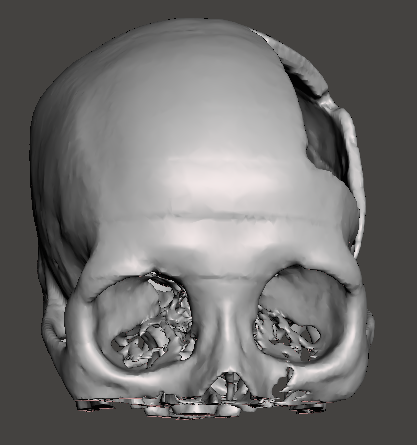

🖼️ Reference Renders
Static Captures From the Build Process
Until your .glb exports are linked above, browse these reference renders captured at each modeling stage.





Rotate, zoom, and inspect cranial reconstructions, plates, and molds — straight in your browser.
Each viewer accepts a .glb or .gltf model. Swap the src attribute on <model-viewer> with your exported file to populate it.
Until your .glb exports are linked above, browse these reference renders captured at each modeling stage.
